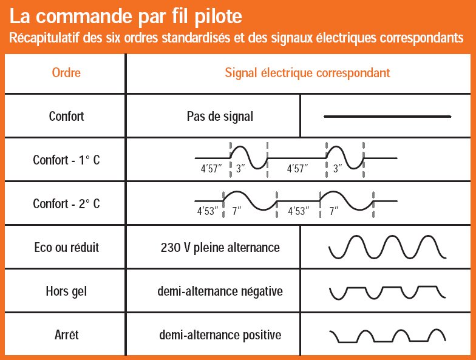
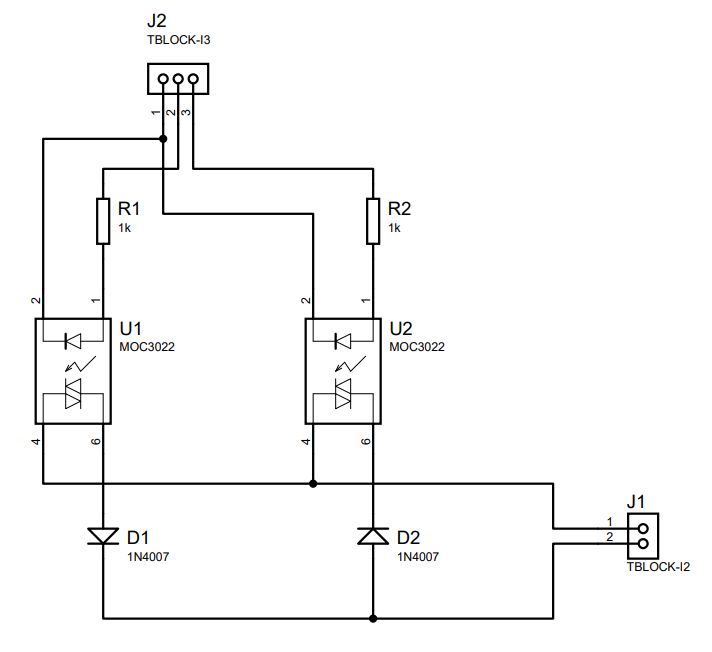

Je suis en train d'automatiser l'allumage et lextinction de mes radiateurs électriques. Tous les radiateur électriques récents ont ce qu'on appel un fil pilote (en plus des deux fils d'alimentation. Ce fil pilote permet de mettre en marche ou arrêter le radiateur.
Sur ce fil pilote, on y applique du 230V, comme résumé avec ce tableau

Le circuit que j'ai conçu utilise les fonctionnalités:
- Éco ou réduit
- Hors-gel
- Arrêt
- Confort
La commande
Il faut un circuit capable de "trier" les alternances d'un courant alternatif 230V.
J'ai utilisé des diodes avec des opto-triacs MOC3022

La phase du secteur arrive sur J1-1 et le fil pilote sur J1-2. Ensuite, en prenant le 0V sur J2-1:
- 00 : Confort
- 01 : Hors-gel
- 10 : Arrêt
- 11 : Éco ou réduit
Pilotage
J'ai utilisé le Wemos; c'est une sorte d'arduino avec le wifi embarqué. Le programme que j'ai mis à dispo sur github expose une API.
Le circuit est capable de se connecter par WPS sur la box internet.